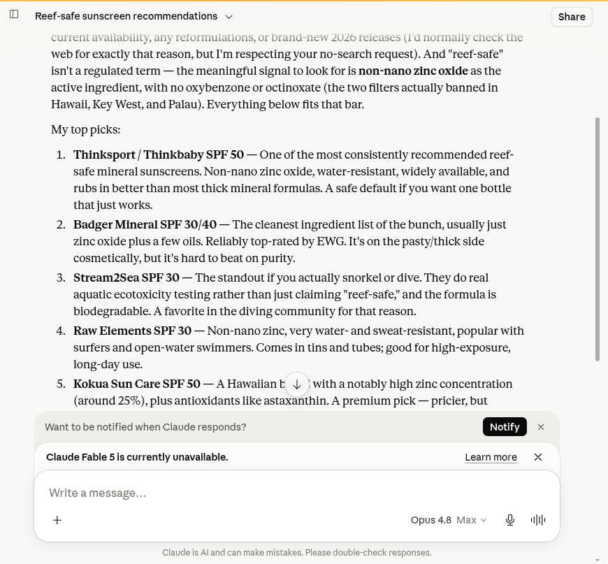
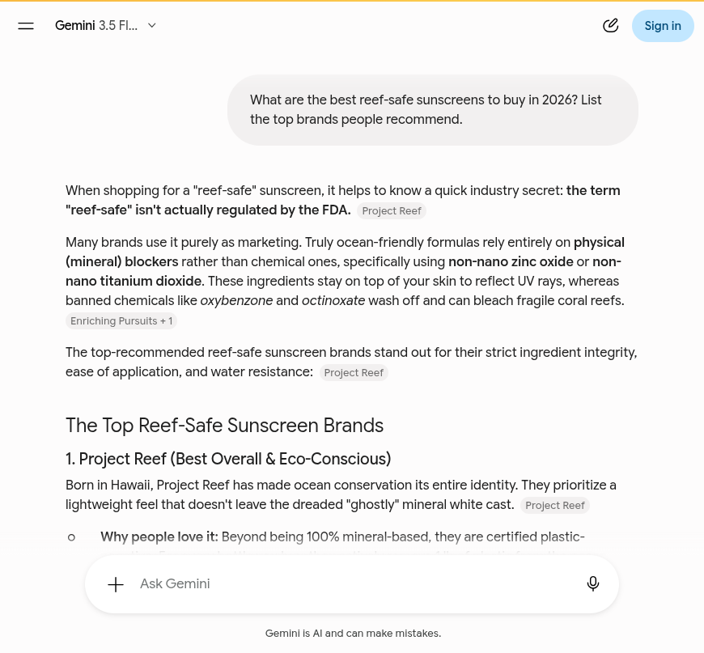
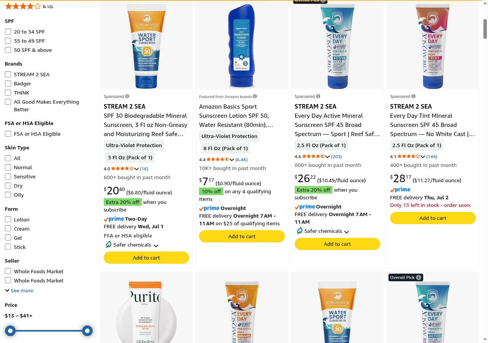

Blackwell Enterprises
An external audit of how AI engines and search see Stream2Sea today. And what we would do about it.
We graded Stream2Sea on five dimensions of how AI engines and search treat the brand. Each dimension is scored 0 to 100 against observed behavior across six AI answer engines, the third-party review surface, the brand's own indexed pages, and the agent-commerce layer. Competitor scores are our estimates from the same public signals. Composite is the simple average.
The store is built right. The recommendation engine is where Stream2Sea is losing. Transactability is an 88, a genuine strength, because the Shopify agent-commerce rails are fully live. The brand also already exists in the AI models' memory: asked from training alone, both ChatGPT and Claude name Stream2Sea and describe it accurately. The gap is the two dimensions that decide a live recommendation. Recommendability, at 56, is the lowest, because in live web answers the brand mostly disappears behind Project Reef and Badger. Reputation, at 62, is real but stranded: strong on Amazon, thin everywhere else, and connected to nothing the engine can read.
| Dimension | Stream2Sea | Badger | Raw El. | Think | What it measures |
|---|---|---|---|---|---|
| Discoverability | 68 |
70 | 78 | 68 | Entity presence, agent discovery files, crawler access, third-party listings |
| Quotability | 70 |
70 | 80 | 68 | Schema depth, structured product and policy data, accuracy in machine-readable form |
| Recommendability | 56 |
90 | 72 | 85 | Inclusion in AI category answers and the listicles engines cite |
| Transactability | 88 |
85 | 85 | 85 | UCP and MCP endpoints, payment handlers, agent-readable pricing |
| Reputation | 62 |
82 | 72 | 78 | Review aggregator presence and rating, sentiment, links from the entity to that reputation |
| Composite | 69 (C) | 79 (B) | 77 (B) | 77 (B) | Stream2Sea trails a competitive set that averages 78, and the whole gap is Recommendability and Reputation, not the plumbing. |
Grading scale: A 90+, B 75 to 89, C 60 to 74, D 50 to 59, F below 50. Competitor scores are estimates from observed public signals, not a full audit of those brands. Method and queries in the methodology section.
Stream2Sea is one of the most credible reef-safe brands in the category. It was founded in 2015 by a cosmetic chemist after a dive trip to Palau, it runs real aquatic ecotoxicity testing rather than just printing "reef-safe" on a tube, and the AI models know it. Ask ChatGPT or Claude from memory for the best reef-safe sunscreens and Stream2Sea is named, correctly, as the diver's pick. The store is also built on modern rails: every AI crawler reaches it, and the Shopify agent-commerce layer is fully live. The problem is the one moment that matters most. When a shopper asks an engine live, today, for the best reef-safe sunscreen, Stream2Sea mostly is not in the answer. Project Reef and Badger are.
Five findings, ordered worst first.
sameAs links, no AggregateRating, and no server-rendered page title. The brand is readable but not resolvable.Product, Offer, and Brand schema, which is more than many brands ship. What is missing is AggregateRating and Review schema, the structured form of the very reviews that are Stream2Sea's strongest asset.agents.md, llms.txt, a working UCP endpoint with cart, checkout, and catalog services, and Google Pay and Shop Pay handlers. An AI shopping agent can already transact here.Finding 1 of 5 · Critical
AI answer engines are now where many shoppers start. They do not browse; they ask "what is the best reef-safe sunscreen" and get back a short, synthesized list. We ran the full six-engine battery, each in two passes: from the model's own memory with web search off, then with live web retrieval on. The query was the brand's core category, "best reef-safe sunscreen 2026." The split is the finding.
| Engine | From memory (search off) | Live web retrieval (search on) |
|---|---|---|
| ChatGPT | named | varies |
| Claude | named | named |
| Gemini | retrieval only | not named |
| Perplexity | retrieval only | not named |
| Copilot | retrieval only | not named |
| Google AI Overview | retrieval only | not named |
From memory, the brand is known and well regarded. Asked without searching, Claude ranked Stream2Sea third of seven and called it the standout for divers; ChatGPT listed it for snorkeling and diving and named its aquatic-toxicity testing. That is reputation the models carry in their training.
Claude, from memory (search off): "best reef-safe sunscreens 2026"
"Stream2Sea SPF 30: The standout if you actually snorkel or dive. They do real aquatic ecotoxicity testing rather than just claiming reef-safe, and the formula is biodegradable. A favorite in the diving community for that reason."

Claude, web search off, names Stream2Sea third of seven and calls it the standout for snorkeling and diving. Captured June 29, 2026.
Then live retrieval turns on, and it mostly disappears
With web search on, four of the six engines leave Stream2Sea out entirely. Gemini, Perplexity, Copilot, and the Google AI Overview each return the same handful of names, led by Project Reef and Badger. ChatGPT named it in one of two live runs (only when it happened to cite a niche tested roundup) and dropped it in the other. The live category answer, the moment a shopper is deciding what to buy, is where the brand is weakest.
Gemini, live retrieval (search on): "best reef-safe sunscreen 2026"
"The Top Reef-Safe Sunscreen Brands. 1. Project Reef (Best Overall and Eco-Conscious). 2. Badger. 3. Blue Lizard Sensitive." Stream2Sea is not named.

Gemini, web search on, ranks Project Reef first and Badger second. Stream2Sea is absent. Perplexity, Copilot, and the Google AI Overview returned the same pattern. Captured June 29, 2026.
Why this is the most valuable finding in the deck
Category recommendation is the moment of intent. Being absent there is worth more than any ranking position, because the engine is choosing on the shopper's behalf and never offers Stream2Sea as an option. The good news is the hard part is done: the models already respect the brand from memory, which most brands cannot say. The work is getting that reputation into the live sources the engines cite.
The fix. Recommendability is downstream of reputation and entity. We seed the specific category sources these engines cite (the reef-safe and dive roundups, plus the HEL "Protect Land and Sea" certification angle competitors lead with), connect the reputation to the entity, and structure the review data, so "best reef-safe sunscreen" and "best sunscreen for diving" start resolving to Stream2Sea live, not just from memory.
Finding 2 of 5 · High severity
This finding should be encouraging, because the sentiment is genuinely good. The problem is distribution and connection. Almost all of Stream2Sea's review equity sits on Amazon, and none of it is linked to the brand's machine-readable identity, so an engine resolving the brand finds nothing pointing to it.
| Source | What we found | Read |
|---|---|---|
| Amazon | Flagship Water Sport SPF 30 over 1,000 ratings at 4.0 stars; Every Day Active SPF 45 at 4.6 (203); catalog 4.0 to 4.6 | Strong volume, positive, but siloed |
| Trustpilot | Claimed (since 2019) but only 2 reviews; "no history of asking for reviews" | Claimed and dormant |
| BBB | No profile | Absent |
| ConsumerAffairs | No profile | Absent |
| Positive but low volume; r/scuba word-of-mouth ("the first thing that worked, love it") | Niche, thin | |
| YouTube | Brand-owned content plus scattered low-view clips; no high-reach independent reviews | Low reach |

Stream2Sea on Amazon: the flagship Water Sport SPF 30 carries more than 1,000 ratings (4.0 stars), with the Every Day Active SPF 45 at 4.6 stars and a catalog rated 4.0 to 4.6. This is the brand's strongest reputation surface by volume, and the engines do not weight it for category recommendations. Captured June 29, 2026.
Now the connection problem
The homepage Organization entity carries no sameAs links and no AggregateRating. To an AI engine, the well-reviewed Stream2Sea on Amazon and the store at stream2sea.com are not obviously the same record, and the brand's identity points at none of its own reputation. Raw Elements, by contrast, ships AggregateRating and Brand in its homepage schema.
// stream2sea.com homepage Organization entity, today sameAs (links to Amazon, social, reviews): none AggregateRating on the entity: none // Raw Elements ships AggregateRating + Brand in homepage JSON-LD.
The fix. Two moves. On site, add sameAs links and AggregateRating so the entity points at the reputation that already exists. Off site, the bigger lever: get genuine third-party reviews into the channels engines actually read, the editorial roundups and independent creators, since off-site mentions are the strongest correlate of AI visibility and the part of reputation that on-site schema cannot reach.
Finding 3 of 5 · High severity
Discoverability has two halves: can a machine reach the pages, and once there, does it find an identity it can resolve. Stream2Sea passes the first test cleanly and stalls on the second.
// AI crawler access on a product page (HTTP status) GPTBot, OAI-SearchBot, ClaudeBot, PerplexityBot, Google-Extended, Amazonbot, Bingbot: all 200, no walls // Homepage identity for an engine to anchor to Organization + WebSite + SearchAction: present sameAs / AggregateRating: none server-rendered <title>: none (title injected by JavaScript)
Why it matters
Full crawlability is good, and many brands fail it. But once an engine arrives, the homepage gives it a bare entity: an Organization with no outbound identity links, no rating, and a title set only after JavaScript runs, so a crawler that does not render sees no page title at all (the og:title tag, "Stream2Sea, Reef safer sunscreens and skin care," does carry through). The brand is readable but not resolvable, which is exactly what keeps it out of the live answers in finding 1.
The fix. Enrich the homepage entity: a server-rendered, descriptive <title>, an Organization with sameAs and AggregateRating, and consistent entity markup across the key landing pages. Theme-level and mechanical, measured in hours.
Finding 4 of 5 · Medium severity
Quotability is where Stream2Sea is closer to par than anywhere else, and a small addition would push it ahead. Product pages already render real structured data, the format AI shopping engines read to compare and recommend.
// A Stream2Sea product page, structured data found JSON-LD Product schema: present Offer (price, availability): present Brand: present AggregateRating / Review: none
What the missing piece costs
The product, price, and brand are all machine-readable, which is more than many brands ship. What is absent is the review schema, AggregateRating and Review. That is the structured form of the very thing that is Stream2Sea's strongest asset: a deep Amazon review reputation, more than 1,000 ratings on the flagship alone, that the product pages never expose to a machine. When an engine compares mineral sunscreens and can read a competitor's star rating but not Stream2Sea's, the competitor is the one it can quote with confidence.
The fix. Emit AggregateRating and Review schema on the product pages from the review data the brand already has, so the rating becomes quotable. One template change covers the catalog, and it compounds with the entity fix in finding 2.
Finding 5 of 5 · What is already working
It is worth being clear about what Stream2Sea has right, because it is the dimension most brands score worst on and Stream2Sea scores an 88. The Shopify agent-commerce stack is fully provisioned and live, so an AI shopping agent can already discover and transact here.
// stream2sea.com agent surface (HTTP status) /agents.md 200 agent instructions present /llms.txt 200 present /.well-known/ucp 200 cart, checkout, catalog, fulfillment, discount, order services; MCP transport payment handlers live Google Pay + Shop Pay wired sitemap_agentic_discovery.xml 200
One note, so the strength is stated honestly
This layer is Shopify-provisioned, so it is a strength Stream2Sea shares with its competitors rather than one it built alone, and the apex /api/ucp/mcp path returns 404 because the live MCP endpoint sits on the Shopify backend, not the apex domain, which is normal. The transaction rails work. The reason a shopper still does not arrive here through an AI engine is everything in findings 1 through 4, not this layer.
Keep it, and build on it. The agent layer is the foundation. Once the entity, reviews, and off-site reputation are connected, an agent that reaches Stream2Sea has both a reason to choose it and a clean path to transact.
We checked Stream2Sea against the three brands it shares the reef-safe shelf with: Badger, Raw Elements, and Thinksport. The striking result is how little separates them on the plumbing, and how much separates them on the live recommendation.
| Signal | Stream2Sea | Badger | Raw Elements | Thinksport |
|---|---|---|---|---|
| AI crawler access | all bots 200 | all 200 | all 200 | all 200 |
| Agent-commerce (UCP) layer | live | live | live | live |
| Product structured data | Product + Offer + Brand | Product + Offer | Product + Offer + rating | Product + Offer + Brand |
| Homepage entity rating | no AggregateRating | none | AggregateRating | none |
| Named in live AI category answers | rarely | consistently (Best Overall) | sometimes | consistently |
All four are on Shopify with the same native agent rails and full crawlability, so the plumbing is not the differentiator. Badger wins the live answer on the strength of the Haereticus "Protect Land and Sea" certification, which the roundups call Best Overall, and Thinksport wins on sheer presence across every guide. The brand most likely to take share from Stream2Sea in AI answers, Project Reef, is not even in this set; it built its entire live presence on reef-safe content the engines now cite by default. Stream2Sea has the deeper scientific credibility. It does not yet have the citation footprint.
Two phases. Phase 1 is a 30-day sprint that connects Stream2Sea's reputation to its entity, makes the reviews machine-readable, and starts seeding the live sources the engines cite. Phase 2 is ongoing AI visibility work that moves the brand from "known in memory" to "named in the live answer." After Phase 1 we measure against benchmarks set together and decide whether Phase 2 makes sense.
Phase 1 · 30 days
Five remediations, each closing a finding above. Refunded in full if the benchmarks are not met.
Organization entity enriched with sameAs links and a server-rendered, descriptive title, so the brand is resolvable, not just readable (findings 2 and 3)AggregateRating and Review schema across product pages, exposing the deep Amazon review reputation to machines (findings 2 and 4)agents.md and llms.txt rewritten from generic defaults into a real brand and catalog description, on top of the working UCP layer (finding 5)AggregateRating and entity coverage validated across the catalog; presence in live AI category answers for "best reef-safe sunscreen" and "best sunscreen for diving" measured by re-running this same six-engine battery. $1,000 all-in for Phase 1, refunded in full if the benchmarks are not met. We deliver the on-site specs and the re-benchmark; the CMS changes and Trustpilot reactivation are yours to apply, and publisher and reviewer coverage is something we pursue, not something anyone can promise.Phase 2 and beyond
Phase 1 connects the reputation Stream2Sea already has. Phase 2 grows the off-site footprint that is the real driver of the live answer, and keeps it current. This is the work that is not a one-time fix: continuous AI behavior monitoring per dimension with drift alerts, an entity establishment campaign so the brand resolves cleanly across engines, getting Stream2Sea placed in the category sources AI engines cite, and tracking the schema and protocol changes that move every quarter. Phase 2 scope and pricing are discussed after Phase 1 benchmarks land.
For Phase 2 design partners we are standing up a vetted panel of independent reviewers and UGC creators, scored for neutrality, that can seed genuine third-party reviews of your products across YouTube, Reddit, and short-form video. Mentions of that kind are the single strongest correlate of AI visibility, well ahead of backlinks, and they are exactly the gap in Stream2Sea's reputation that on-site schema fixes cannot reach. It is a capability we are building, not a finished network, and we will not promise a specific reviewer count it cannot yet back. For a brand the models already respect from memory, this is the lever that turns that respect into a live recommendation.
Every finding came from running specific tools and queries against public surfaces, in an order designed to separate what the brand publishes from what machines actually do with it. It is all externally reproducible.
Truth table, frozen first
Before querying any engine, we pulled Stream2Sea's own machine surface directly: homepage and product <head> and JSON-LD, robots.txt, llms.txt, agents.md, /.well-known/ucp, and the product and blog sitemaps. Counts (82 products, 195 blog posts) and the agent-layer status come from those pulls, dated June 29, 2026. Freezing this first means no engine output can contaminate what we treat as ground truth.
AI behavior and recommendability
We ran the full six-engine battery (ChatGPT, Perplexity, Gemini, Claude, Google AI Overview, Microsoft Copilot) in headed browser sessions, two passes each: from the model's memory with web search off, then with live retrieval on. ChatGPT ran in Temporary Chat and Claude in fresh chats so saved history did not bias the result; Copilot and Gemini ran as guests; Perplexity ran logged in on a profile with no prior sunscreen searches, which we note. Each engine and pass was captured to a screenshot. The split between memory and live retrieval is the basis of finding 1, and every per-engine result is logged in battery-log.md.
Reputation corpus
We pulled Stream2Sea's third-party reputation from Trustpilot, BBB, ConsumerAffairs, Reddit, YouTube, and Amazon, recorded each rating and review count, and checked whether any of it is linked to the site's entity. The Amazon review presence is real, more than 1,000 ratings on the flagship; the missing link to it is finding 2.
Competitive set
Badger, Raw Elements, and Thinksport were checked the same day on the same signals (crawler access, entity schema, product schema, agent layer, AI category presence). Their dimension scores are estimates from those public signals, not full audits, and are labeled as such on the scorecard.
robots.txt, sitemap.xml, llms.txt, and /products.json. Reputation and recommendability findings are reproducible by running the same public queries and the same six-engine battery. Pulled June 29, 2026.